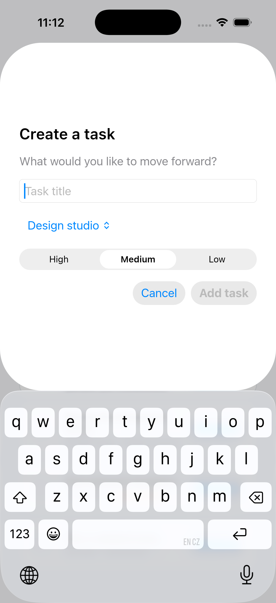
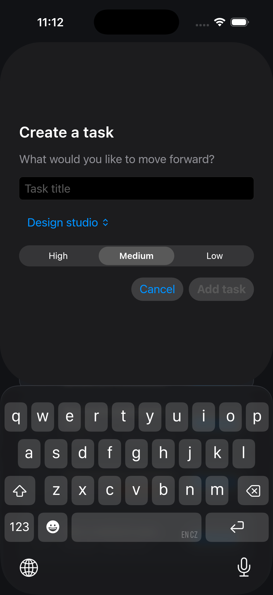

Skutečné snímky simulátoru iOS 26.5 · 19. listopadu 2026
Opraveno pořadí akcí, váha textu tlačítek a stmavení včetně bezpečných okrajů. UIKit klávesnice přebírá světlý/tmavý režim aplikace.
Escape nyní přes UIKit command responder skutečně zavírá egui potvrzovací alert. Ověřeno na iPhonu a iPadu; všech šest úkolů zůstává. Na iPadu navíc opraven návrat fokusu, který po zavření vyvolával klávesnici. Integrace je zatím součástí iOS hostu této ukázky, nikoli obecného adaptéru pro Bevy.
Regrese ověřují pořadí akcí, ignorování kliknutí mimo alert, Enter bez implicitního smazání, zrušení a explicitní smazání. Nativní SwiftUI: Enter nesmazal, Escape zrušil.
365 knihovních/doc testů a 8 testů dema prošlo. Čtyři GPU snapshot skupiny jsou opt-in. Root i iOS clippy prošly. Obě aplikace sestaveny pro iOS simulátor.
Není to 100% shoda: nativní sklo/rozostření okraje alertu, zalomení popisu, predikční lišta klávesnice, úplná nativní editace/výběr textu a obecné hardwarové klávesové zkratky stále vyžadují práci. Fyzická zařízení zde ověřena nebyla.

